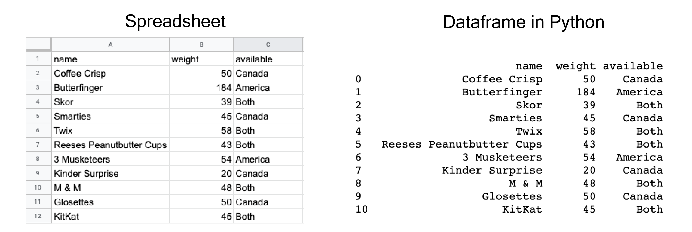

In Lecture 6 you wrote your first lines of Python in Colab: variables, types, comparisons, and errors read from their last line.
Today, three questions:
How do you open a table, and take a first look at it?
How do you keep only the columns and the rows a question needs, and sort them?
How do you create a column, and save the result?
pandas and DataFrames
pandas is Python’s library for tables, and a table in pandas is a DataFrame.

Source: UBC Master of Data Science, Programming in Python for Data Science
Named columns, and rows labelled by an index
One column on its own: a Series
Every pandas command works on whole columns at once
Five Operations
Almost every data question needs only five operations, and you have done all five in Tableau:
Operation
What it does
In Tableau
In pandas
Selection
keeps columns
the fields you drag in
insta[["format", "reach"]]
Reduction
keeps rows
the Filters shelf
insta[insta["format"] == "reel"]
Extension
adds a column
a calculated field
insta["rate"] = insta["likes"] / insta["reach"]
Aggregation
a row per group
SUM by a dimension
insta.groupby("format")["reach"].sum()
Combination
joins two tables
a relationship or a join
pd.merge(posts, ads, on="post_id", how="left")
Today, a first look at the table, then the first three operations, one section each. Lecture 8 does the last two, and Lecture 9 draws the results.
Today’s Notebook
A new notebook, STA1000 Lecture 7. Python runs on Google’s computer, and your file is on your laptop: the file has to be uploaded to the runtime first.
From Loop, download insta-data.csv
In Colab, click the Files icon in the left sidebar
Drag the file into the panel, or use its upload button
It appears in the list: Python can now read it by its name
Uploaded files are deleted with the runtime. Next session, upload them again.
1. A First Look
Loading pandas
In the first cell of every notebook:
import pandas as pd
import loads a library, ready-made code for one job: here, tables. Colab has pandas installed already
as pd gives it a short name: every pandas command then starts with pd., as in pd.read_csv(). Use exactly pd: every example online assumes it
You see
Why
ModuleNotFoundError: No module named 'panda'
a typo: pandas, with an s
NameError: name 'pd' is not defined
the first cell has not run since the session started: run it
Reading a CSV File
A CSV file is a table written as text (Lecture 2): names on the first line, one row per line, commas between the values. The start of insta-data.csv:
NaN marks a missing value: 225 posts went out outside any campaign
insta["campaign"].isna().sum() counts them: .isna() is True where a value is missing, and .sum() counts the True
Missing does not mean wrong. Here it means “no campaign”. Find out what it means before you drop or fill it
The Key Figures of a Column
insta["reach"].describe()
count 431.000000
mean 9787.928074
std 27747.990577
min 361.000000
25% 2465.500000
50% 5184.000000
75% 10149.500000
max 535086.000000
Name: reach, dtype: float64
Lecture 3’s key figures in one line. The mean (9,788) is almost twice the median (5,184): a few huge posts pull it up, starting with LR0184 and its 535,086 accounts.
One at a time: .mean(), .median(), .sum(), .min(), .max(). A cell shows only its last result: to see several, wrap each in print().
normalize=True turns the counts into proportions, Lecture 3’s composition: 47% of the posts are reels.
The Lines You Always Run
# first cell: run it first, and again after every restartimport pandas as pdinsta = pd.read_csv("insta-data.csv")insta["posted_at"] = pd.to_datetime(insta["posted_at"])
Then, each in a new cell below it:
insta.head() # what does a row look like?insta.shape # how big is the table?insta.info() # the type of each column, and what is missinginsta["reach"].describe() # the key figures of a numberinsta["format"].value_counts() # the categories of a text column
Never analyse a table you have not looked at. Most analytical errors are a wrong assumption about the data, made in the first five minutes.
Your Turn!
A first look
In a new cell, replace each ____ with the missing word, and run it:
The number of rows and columns, with .shape
The mean and the median of the likes, with .mean() and .median()
The share of the posts in each product line, with normalize=True
A mean of 463 likes against a median of 278: a few big posts pull the mean up, as they do for the reach. Each product line has about a fifth of the posts.
2. Selecting Columns
One Column
insta["reach"].head(3)
0 735
1 2647
2 10393
Name: reach, dtype: int64
The name of the table, square brackets, and the name of the column in quotes
Spelt exactly as in the file: insta["Reach"] fails, the column is reach
One column is a Series: its values, with the row numbers on their left
Several Columns
insta[["post_id", "format", "reach"]].head(3)
post_id
format
reach
0
LR0001
reel
735
1
LR0002
reel
2647
2
LR0003
carousel
10393
["post_id", "format", "reach"] is a list: several values between square brackets, separated by commas
The outer pair of brackets selects. One pair gives one column; two pairs, a list inside, give a table, a DataFrame
Keep only the columns a question needs: insta has 26
& keeps the rows where both conditions are True: 3 reels above 50,000 accounts
| keeps the rows where either is: the 203 reels, plus the 3 other posts above 50,000
Each condition in its own round brackets: without them, Python reads "reel" & insta["reach"] first, and fails. The words and and or do not work on columns
The three posts that travelled furthest beyond the followers are the three reels above 50,000 accounts: reels are shown to people who do not follow Loomrow yet.
When pandas Stops
You see
Why
Fix
FileNotFoundError: ... 'insta_data.csv'
the file is missing, or misspelt
upload it; copy its path
NameError: name 'insta' is not defined
insta was never created
run the cells from the top
KeyError: 'Reach'
no column has that exact name
copy it from insta.columns
TypeError: 'tuple' object is not callable
brackets after an attribute
insta.shape
<bound method ...>, no result
a method without its brackets
insta.info()
SyntaxError: ... Maybe you meant '=='
one = inside a filter
==
TypeError: Cannot perform 'rand_' ...
& without the brackets
(...) & (...)
ValueError: The truth value of a Series ...
and or or on columns
& or |
no error, but nothing changed
rename() returns a new table
small = small.rename(...)
Read an error from its last line: it names the problem, and often the fix.
Thanks for your attention and don’t hesitate to ask if you have any questions!